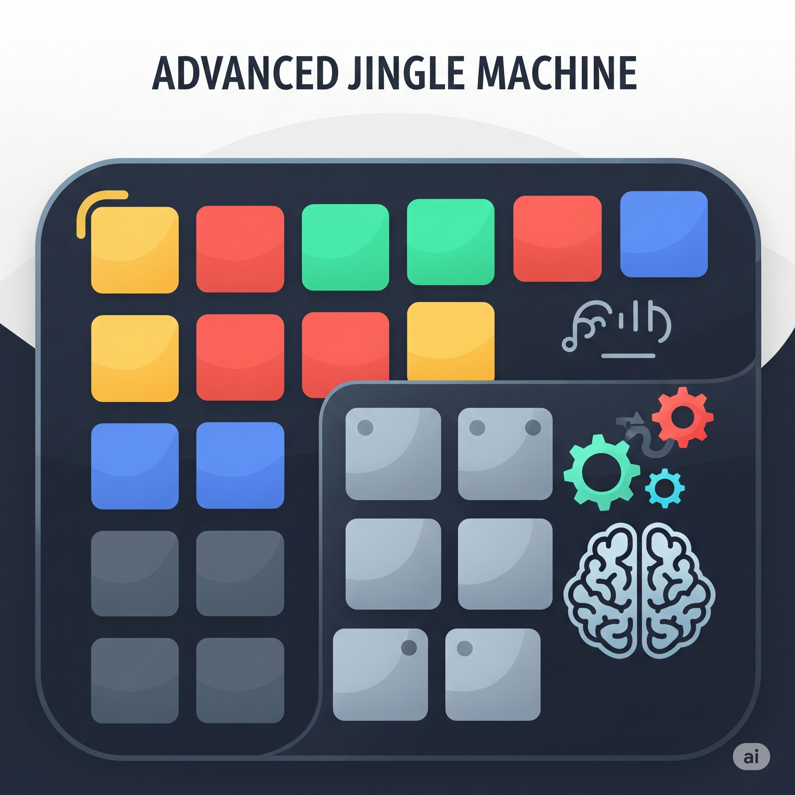
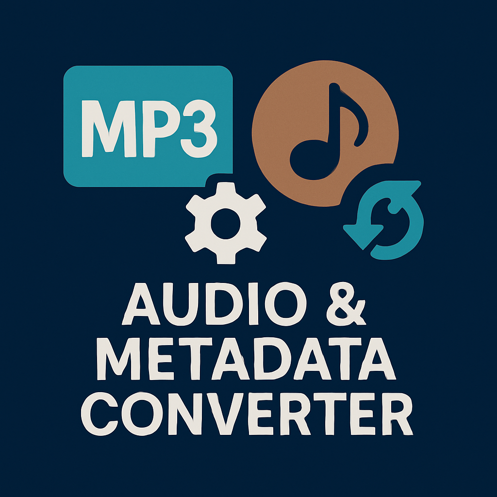

I Miei Software
Applicazioni, utility e script nati dalla sperimentazione pratica con il codice e l'intelligenza artificiale.
Gestore Duplicati Musicali
Un'utility per Windows, macOS e Linux che analizza la tua libreria, isola file di bassa qualità e duplicati, e raggruppa le diverse versioni dei brani per una pulizia rapida.
Scopri di più →
Advanced Jingle Machine v1.5
Console audio professionale con 88 pulsanti personalizzabili, sistema di coda automatico e 128 canali simultanei. Ideale per radio, podcast, DJ e eventi live.
Scopri di più →
Audio & Metadata Converter
Convertitore audio professionale per ottimizzare librerie musicali destinate a radio e streaming. Trasforma tutti i formati in standard broadcasting MP3 192kbps.
Dettagli e Download →